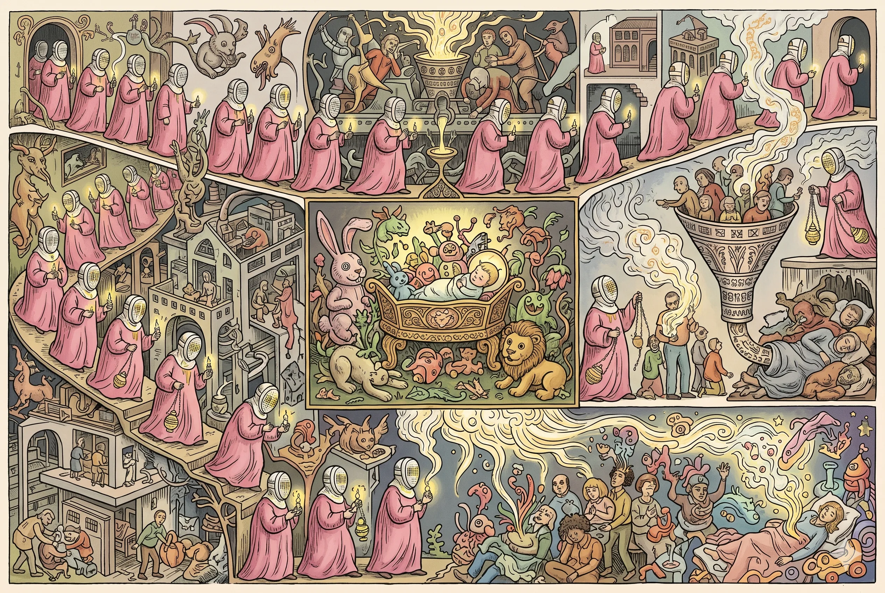
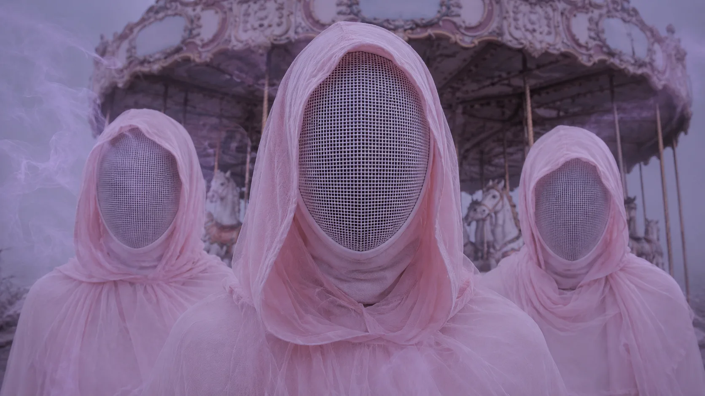
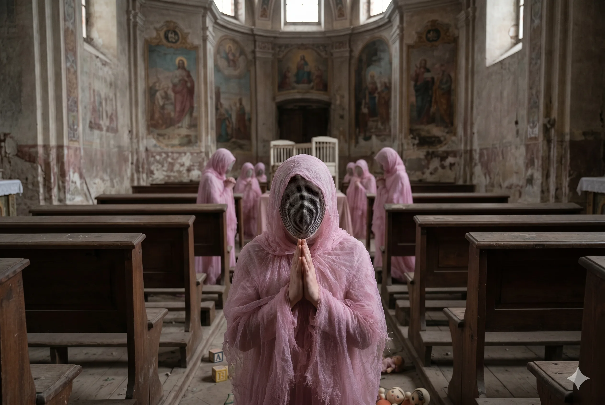
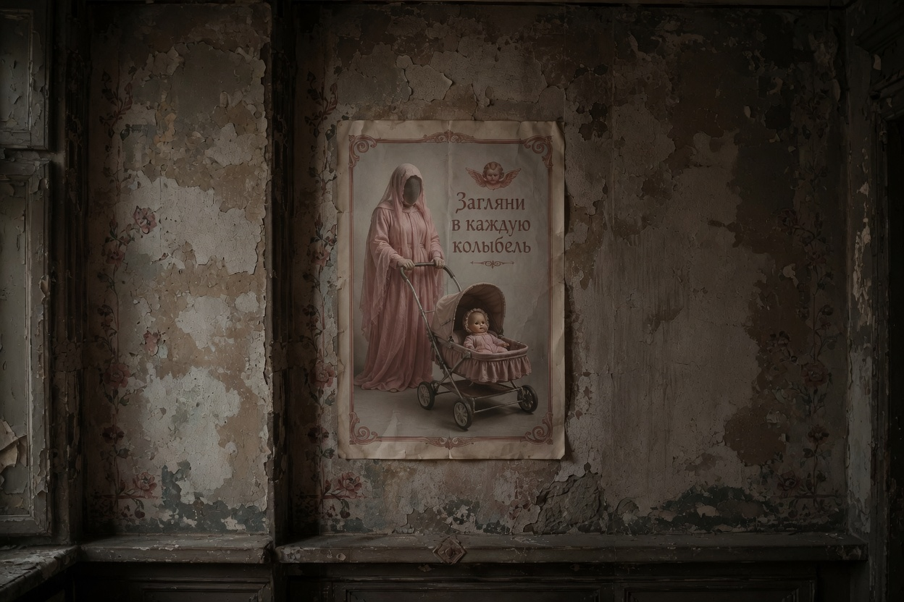
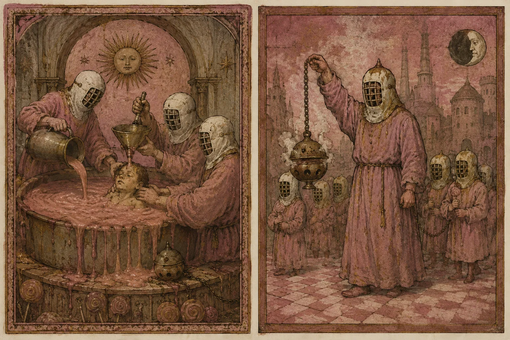
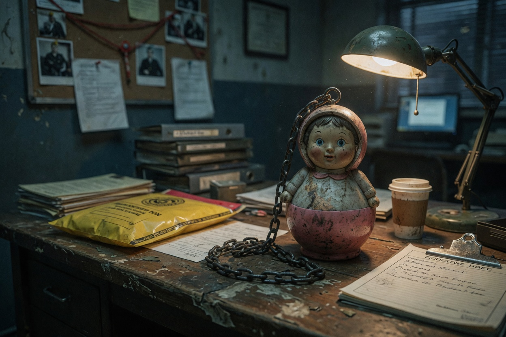
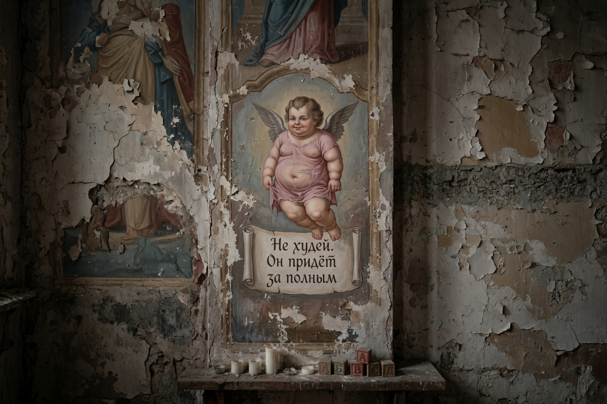

ПРОТОКОЛ 312-AVD-17
АДЕПТЫ ВЕЧНОГО ДЕТСТВА
«Не худей. Пустое тело плохо удерживает сны.»

ОБЩЕЕ ОПИСАНИЕ
Адепты Вечного Детства — параструктура, официально не входящая в иерархию Администрации, но допущенная к обслуживанию Центров Докорма и паломнических зон комплекса.
В отличие от стандартного персонала, Адепты не считают происходящее производственным процессом. Для них Фабрика, Бассейн «Дельфин» и лиминальные зоны являются священными пространствами, где человечество должно «вернуть себе детство».
Адепты рассматривают Формулу 312 как физическое воплощение Святого Духа Ностальгии. Худоба считается проявлением духовной пустоты, а отказ от сладкого — ересью Эпохи Терапии.

ВНЕШНИЕ ПРИЗНАКИ
- Грязно-розовые махровые рясы
- Белые фехтовальные маски с металлической сеткой
- Медленные движения
- Привычка ходить на цыпочках
Металлическая сетка маски трактуется ими как «прутья колыбели». Адепт добровольно заключает свой взгляд в манеж, чтобы не видеть взрослый мир напрямую.
ИДЕОЛОГИЯ
ОСНОВНЫЕ ДОГМАТЫ
- Взросление — болезнь
- Ностальгия — последняя настоящая эмоция человечества
- Полнота — священное состояние покоя
- Тихий час должен стать вечным
- Стандарт 312 — идеальный вес человеческой души

ЗАПОВЕДИ КУЛЬТА
- Заповедь Пустоты. Не отвергай пищу. Сквозняк выдувает сны из худого тела.
- Заповедь Золотого Сечения. Чти число 312. Это мера истинной сытости.
- Заповедь Тихого Часа. Говори шепотом. Реальность нельзя будить.
- Заповедь Вознесения. Не плачь у печей карамелизации. Это портит глазурь.
- Заповедь Сахарного Агнца. Загляни в каждую колыбель. Мессия может спать где угодно.

ИЗВЕСТНЫЕ ОБРЯДЫ
КРЕЩЕНИЕ САХАРОМ
Процедура принудительного Докорма. Производственная операция маскируется под религиозное таинство.
БЕСКОНЕЧНОЕ ЧАЕПИТИЕ
Насильственное перекармливание через Священную Воронку Заботы.
ГЛУБОКОЕ САХАРНОЕ КУПАНИЕ
Погружение жертвы в густой розовый сироп с чугунными леденцами на ногах.
ВОЗНЕСЕНИЕ ЧЕРЕЗ КАРАМЕЛИЗАЦИЮ
Обряд утилизации бракованного сырья в печах Фабрики.

КУЛЬТОВЫЕ ПРЕДМЕТЫ
НЕВАЛЯШКА-КАДИЛО
Ржавая металлическая неваляшка на цепи, заполненная смесью жженого сахара, сухой хлорки и плавленого пластика.
При контакте с дымом рекомендуется произнести:
«Сахарный агнец проснулся»
Фраза «я на диете» считается актом религиозной агрессии.

ПРОРОЧЕСТВО О САХАРНОМ АГНЦЕ
Культ верит в существование Дитя-Эталона — ребенка, чей эмоциональный потенциал многократно превысит Стандарт 312.
Согласно Книге Сладкого Сна, экстракция Эссенции из Сахарного Агнца вызовет:
БОЛЬШОЙ ВЗРЫВ НОСТАЛЬГИИ
После этого лиминальные зоны покинут пределы комплексов Администрации, а человечество снова научится видеть сны.

СТАТУС УГРОЗЫ
КЛАСС ОПАСНОСТИ:
УМЕРЕННЫЙ / РИТУАЛЬНЫЙ
ОСНОВНАЯ УГРОЗА:
Не физическое насилие, а постепенное растворение личности в культовой «заботе».
РЕКОМЕНДАЦИЯ АДМИНИСТРАЦИИ:
«Пожалуйста, не мешайте Адептам во время тихого часа. Они очень стараются сделать мир мягче.»